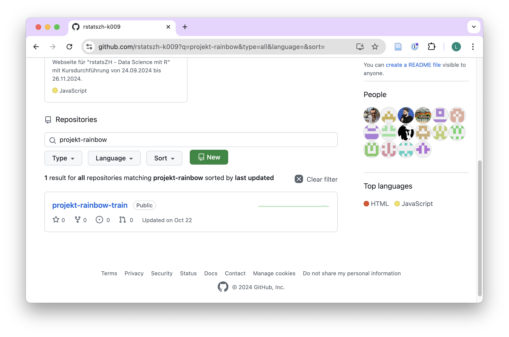
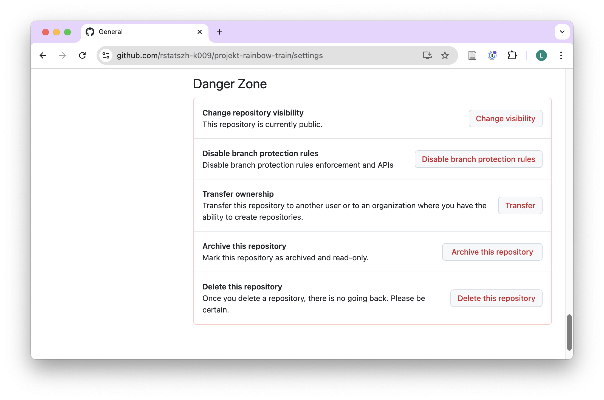
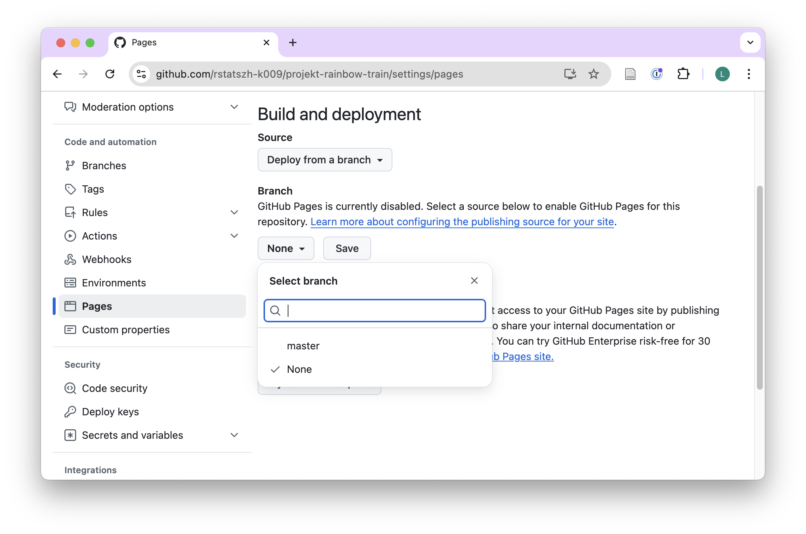
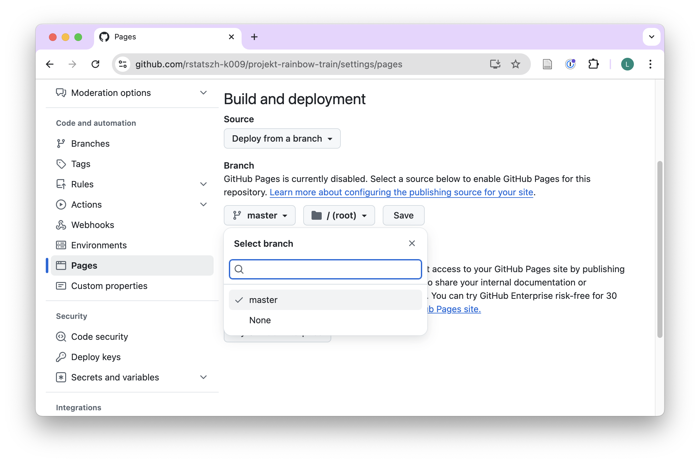
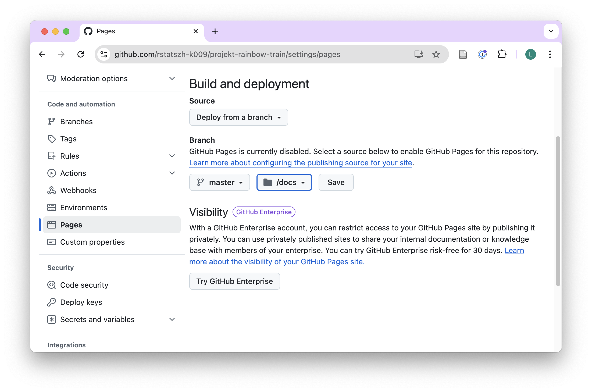
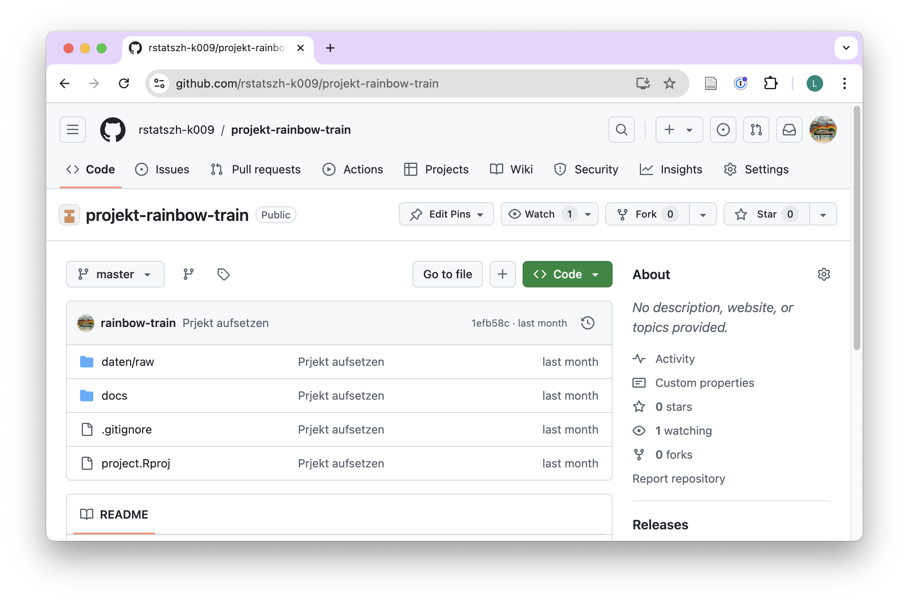
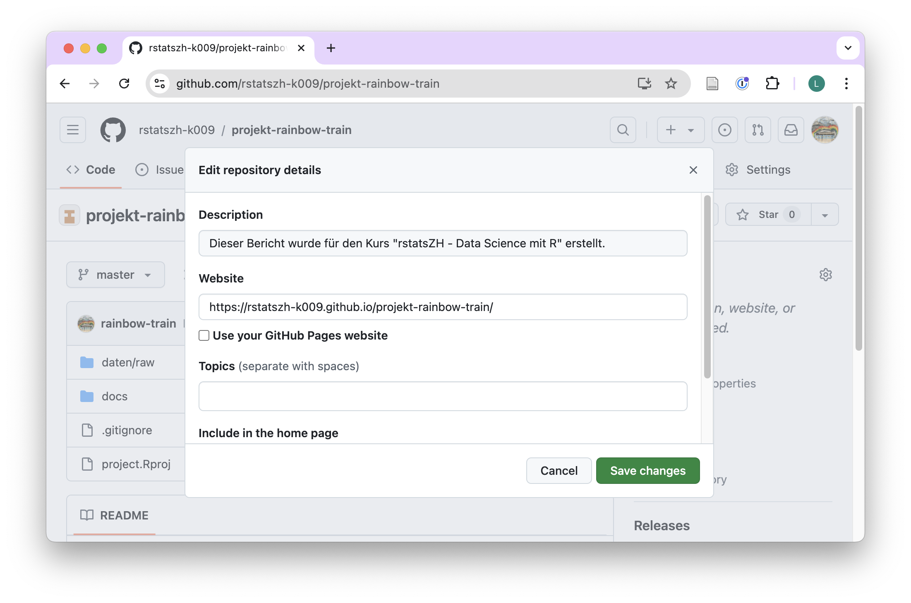
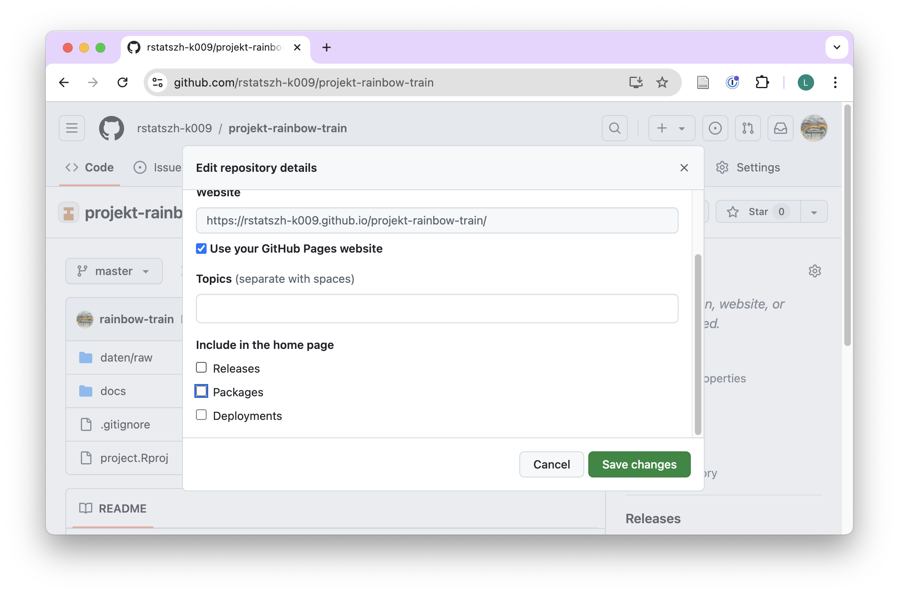
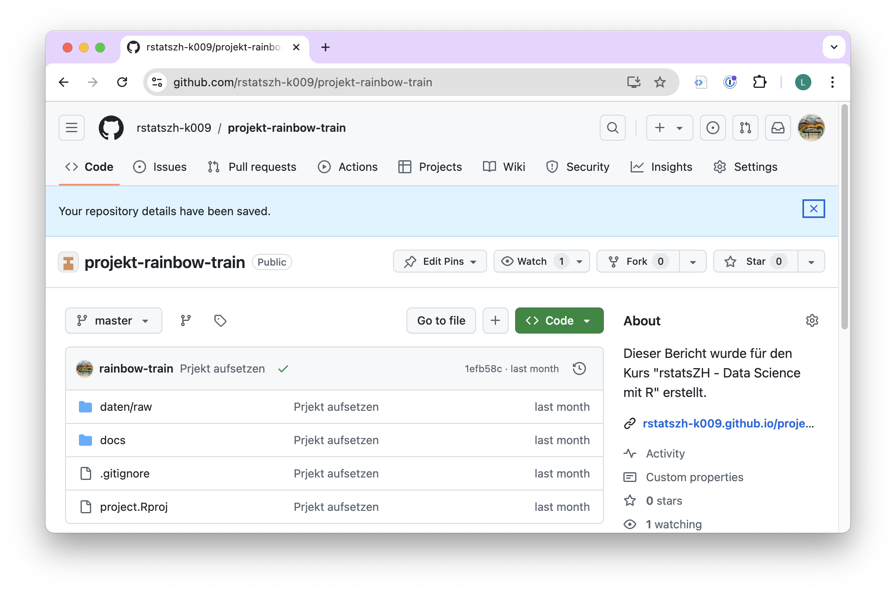

- Die Lernenden können die im Kurs erworbenen Fähigkeiten anwenden, um einen kurzen Projektbericht zu einer Daten-Analyse zu verfassen.
- Die Lernenden können ihre Daten manipulieren und analysieren, um ihre Fragen zu beantworten.
- DIe Lernenden können ihren Abschlussbericht mittels GitHub Pages öffentlich publizieren.
Abschlussprojekt
Das abschliessende Abschlussprojekt bietet den Teilnehmer:innen die Möglichkeit, ihre Fähigkeiten und Techniken auf reale Datensätze anzuwenden. Jede:r Teilnehmer:in nutzt eigene Daten für dieses Projekt, entweder aus der tagtäglich Arbeit in der Verwaltung oder aus einem offenen Datenkatalog.
Lernziele
GitHub Repository
Das GitHub-Repository für dieses Projekt war eine Aufgabe aus Modul 5. Dieses Repository wird nun zur Vorbereitung der Daten und des Abschlussberichts verwendet:
- Module 5 - Übungsaufgabe 2: Abschlussprojekt - Daten auswählen
GitHub Issue Tracker
Der GitHub Issue Tracker des Abschlussbericht Repositories jede:r Teilnehmer:in wird zur Kommunikation und für Fragen zum Bericht genutzt. Die folgenden GitHub-Benutzernamen können getaggt werden: @larnsce.
Abgabedatum
Der Termin für die Einreichung des Berichts ist Dienstag, 10. Dezember 2024.
Erforderliche Elemente
Table 1 ist eine detaillierte Liste der Punkte, die für eine vollständige Einreichung des Abschlussprojektberichts erforderlich sind. Die Punkte sind in technische, datenbezogene und intellektuelle Aufgaben eingeteilt. Wenn ein Punkt unklar ist, wende dich bitte an die Kursleitung.
Diese Liste ist auch als Google Sheet verfügbar, von wo aus du dir eine Kopie erstellen und deinen Fortschritt als Checkliste verfolgen kannst:: https://docs.google.com/spreadsheets/d/1kyPzhG_0oZ7njXaKh6uIIW0yICEHySSEShlfPmzxviM/edit?gid=0#gid=0
| nr | kategorie | aufgaben |
|---|---|---|
| 1 | technisch | Der Bericht wird fehlerfrei im HTML-Format wiedergegeben (gerendert) und enthält mindestens fünf Kapitel der Überschriftenebene 1 mit den folgenden Namen: Einleitung, Daten, Ergebnisse, Schlussfolgerungen. |
| 2 | technisch | Der YAML-Berichtskopf enthält Titel, Autor, Datum und Inhaltsverzeichnis, die in der kompilierten HTML-Ausgabe korrekt angezeigt werden. |
| 3 | technisch | Warnungen werden in der kompilierten Ausgabe ausgeblendet, aber der Code wird in der kompilierten Ausgabe angezeigt. |
| 4 | technisch | Der Bericht enthält mindestens zwei Datenvisualisierungen. |
| 5 | technisch | Jede Datenvisualisierung hat bearbeitete, für Menschen lesbare Beschriftungen (z. B. Achsenbeschriftungen, Legendentitel). |
| 6 | technisch | Jede Datenvisualisierung verwendet mindestens eine Skalierungsfunktion (z. B. Farbe/Füllung mit scale_color_XYZ, Achsen mit Funktionen scale_x_XYZ). |
| 7 | technisch | Jede Datenvisualisierung hat eine Bezeichnung (label), die in den Code-Block-Optionen definiert ist. |
| 8 | technisch | Jede Datenvisualisierung hat eine Beschriftung (caption), die in den Code-Block-Optionen definiert ist. |
| 9 | technisch | Jede Datenvisualisierung wird im Bericht mit einem Querverweis versehen, wobei die definierte Bezeichnung (label) aus den Code-Block-Optionen verwendet wird. |
| 10 | technisch | Der Bericht enthält mindestens eine Tabelle mit zusammenfassenden Statistiken (z. B. Anzahl, Mittelwert, Median, Standardabweichung usw.). |
| 11 | technisch | Jede Tabelle wird in der gerenderten Ausgabe mit einer im Kurs erlernten Funktion (z. B. kable()-Funktion oder gt()-Funktion) formatiert. |
| 12 | technisch | Jede Tabelle hat eine Bezeichnung (label), die in den Code-Block-Optionen definiert ist. |
| 13 | technisch | Jede Tabelle hat eine Beschriftung (caption), die in den Code-Block-Optionen definiert ist. |
| 14 | technisch | Jede Tabelle hat bearbeitete, für Menschen lesbare Beschriftungen (z. B. Achsenbeschriftungen, Legendentitel). |
| 15 | technisch | Das Projekt-Verzeichnis (Repository) ist mittels GitHub Pages öffentlich publiziert. |
| 16 | daten | Die Daten aus dem Ordner daten/raw wurden importiert, bereinigt und als analysefertige verarbeitete Daten im Ordner daten/processed gespeichert. |
| 17 | daten | Der Ordner daten/processed enthält eine codebook.csv Datei mit zwei Spalten (variable_name, beschreibung), die jede Variable der Daten im selben Ordner dokumentieren. |
| 18 | daten | Das Hauptverzeichnis enthält eine README.md Datei aus einer Vorlage und die Dokumentation für das Abschlussprojekt und die Daten. |
| 19 | intellektuell | Der Abschnitt Einleitung führt mit 3 bis 5 Sätzen in den Kontext ein in dem das Projekt erstellt wurde. |
| 20 | intellektuell | Der Abschnitt Daten beschreibt die Daten mit 3 bis 5 Sätzen. Die Datenquelle mit Link (falls vorhanden) ist angegeben. |
| 21 | intellektuell | Der Abschnitt Ergebnisse beschreibt und interpretiert die Diagramme und Tabellen welche erstellt wurden. |
| 22 | intellektuell | Der Abschnitt Schlussfolgerungen fasst die Ergebnisse in Form von Aufzählungspunkten zusammen. |
Bericht auf GitHub Pages veröffentlichen und einreichen
Dein Bericht wird durch die Veröffentlichung auf GitHub Pages und die Übermittlung des Links über ein GitHub Issue in deinem Abschlussnericht-Repository abgeschlossen. Bitte tagge die Kursleitung in dem GitHub Issue: @larnsce. Wir werden den Bericht prüfen und Feedback geben.
Navigate to your repository
- Öffne github.com in deinem Browser und navigiere zur GitHub-Organisation für den Kurs: https://github.com/rstatszh-k009.

- Verwende das Suchfeld unter “Repositories”, um das Repository für dein Abschlussprojekt zu finden.

- Öffne dein Repository für das Abschlussprojekt.

Repository öffentlich machen
Wenn die Sichtbarkeit deines Repositorys auf “privat” eingestellt ist (erkennbar an einem kleinen Vorhängeschloss neben dem Namen des Repositorys), musst du es zunächst auf “public” (öffentlich) umstellen, indem du die folgenden Schritte ausführst:
- Klick aus “Settings”.

- Bleibe auf “General” und scrolle bis zum Ende der Seite zu “Danger Zone”.

- Neben dem ersten Unterkapitel “Change repository visibility”, klicke auf “Change visibility”, dann “Change to public”.

- Klick “I want to make this repository public”.

- Klick “I have read and understand these effects”.
- Klick “Make this repository public”.
- Gebe die notwendigen Details an.
- Fertig.
Veröffentlichen mit GitHub Pages
- Öffne dein Repository für das Abschlussprojekt und klick auf “Settings”.
- Klicke im linken Navigationsbereich auf “Pages” unter “Code and automation”.

- Unter “Build and deployment”, dann unter Branch, klick auf das Dropbown mit dem Titel “None”.

- Im Dropdown, selektiere “master” (bei einigen von euch vielleicht “main”).

- Klick auf das Dropdown mit dem Titel “/ (root)”. Im Dropdown, selektiere “/docs”.

- Klick “Save”.

Bearbeite “About” des Repositorys
- Öffne dein Repository für das Abschlussprojekt.

- Klicke auf der rechten Seite neben “About” auf das Zahnradsymbol.

- Unter “Description” kannst du folgenden, oder einen von dir gewählten, Text schreiben: ‘Dieser Bericht wurde für den Kurs “rstatsZH - Data Science mit R’ erstellt.

- Unter “Website”, klick “Use your GitHub Pages website” and under “Include in the home page” kannst du die angekreuzten Kästchen entfernen.

Click “Save changes”.
Die öffentliche URL deines Repositorys wird nun unter “About” auf der rechten Seite angezeigt.

Öffne deine veröffentlichte Website und sei stolz auf dein Ergebnis.
Reiche den Link zu deinem Bericht in einem GitHub-Issue in deinem Abschlussbericht Repository ein. Tagge die Kursleitung:
@larnsce